Gregory Swarn Enterprises · social content for 10 Nov to 3 Dec 2026 · for approval
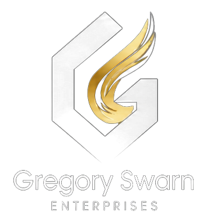
Each posting date has its own two pages. The left page has the words for every platform. The right page has the video and images that go with them.
Every video uses Greg's own voice note, cleaned up for clarity, with captions timed to his words. The same vertical video goes to YouTube Shorts, Instagram Reels, the LinkedIn business page and X.
Nothing in this book is live yet. Each item waits for approval before it is posted.
Turn pages with the arrows below the book or the arrow keys on your keyboard.
Greg's eight principles of executive performance, released on Tuesdays and Thursdays. A carousel on LinkedIn and Instagram adds depth in week one.
| Audience | CEOs, founders and senior leaders scaling 7- and 8-figure businesses |
|---|---|
| Platforms | YouTube, Instagram, LinkedIn business page, X |
| Formats | Short vertical video, feed image, landscape image, carousel |
| Call to action | Free Executive Performance Audit on gregoryswarnenterprises.com |
| LinkedIn today | 2 followers, no posts in 90 days |
| Day 30 goal | 250 page followers, 10,000 impressions, 5 strategy calls booked |
| Tue 10 Nov | Q1 · Success & Well-Being |
| Wed 11 Nov | Carousel · Where executives quietly plateau |
| Thu 12 Nov | Q3 · Investing in Yourself |
| Tue 17 Nov | Q2 · Mind, Body & Performance |
| Thu 19 Nov | Q7 · Energy |
| Tue 24 Nov | Q5 · Personal Accountability |
| Wed 25 Nov | Q4 · Rest & Recovery |
| Tue 1 Dec | Q6 · Balance |
| Thu 3 Dec | Q8 · Longevity |
Wed 25 Nov moves a day early for US Thanksgiving.
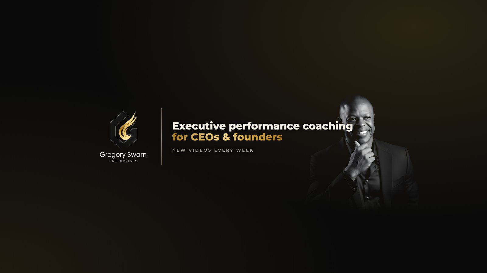
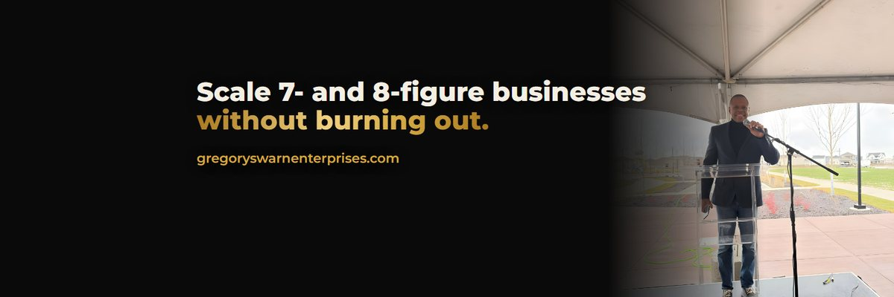
LinkedIn business page: a description and Florida and Nairobi locations will be added, so the page can send invites. Instagram: @maximizeforlife will become a business account with a new name. All of this happens only after approval.
Success means very little if you sacrifice your health, your peace, and your ability to enjoy the life you've worked so hard to build.
What Success Costs When You Forget Yourself
Success means very little if you sacrifice your health, your peace, and your ability to enjoy the life you've worked so hard to build.
Nobody's regret is "I should've worked one more hour."
Free Executive Performance Audit → link in bio
#executivecoaching #ceolife #founders #leadershipdevelopment #highperformance #wellbeing #entrepreneurmindset
Success means very little if you sacrifice your health, your peace, and your ability to enjoy the life you've worked so hard to build.
Nobody looks back and says, "I'm glad I spent an extra hour in the office."
The regrets people talk about at the end are about time with their kids and family, the trips they never took, and whether they helped anyone along the way.
We protect the business and the people in it. We rarely do the same for ourselves.
What's one thing you've quietly sacrificed on the way up?
#ExecutiveCoaching #Leadership #CEO
Free Executive Performance Audit → https://gregoryswarnenterprises.com/?utm_source=linkedin&utm_medium=social&utm_campaign=q1
Success means very little if you sacrifice your health, your peace, and your ability to enjoy the life you've worked so hard to build.
Nobody's biggest regret is one more hour at the office.
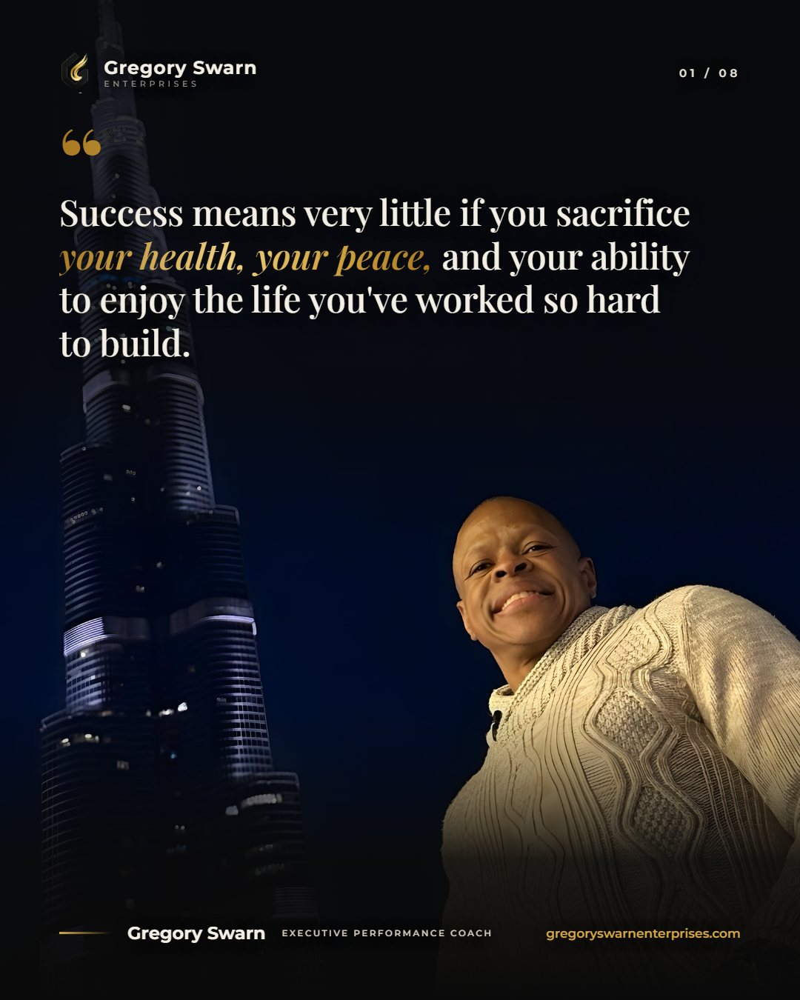
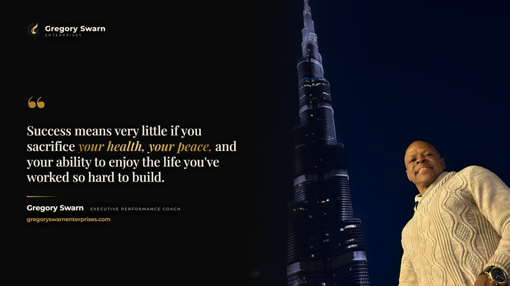
Seven slides from the honest diagnostic on Greg's website. A PDF document post on LinkedIn, and the same slides as an Instagram carousel.
Five patterns show up again and again in the leaders who come to us.
Many leaders spot more than one before they say it out loud.
Which one is yours?
#ExecutiveCoaching #Leadership #CEO
The greatest investment you will ever make isn't in the stock market, real estate, or a business. It's in yourself.
The Investment Most CEOs Ignore
Before stocks, crypto, gold or real estate, invest in yourself.
Free Executive Performance Audit → link in bio
#executivecoaching #investinyourself #founders #ceolife #leadershipdevelopment #highperformance #mindset
People often ask Greg whether the best investment is stocks, crypto, gold or real estate.
No. It's yourself.
Put yourself first. Look after your physical health and your mental health, and keep your passion for what you do. Get that right and the results follow.
Without it, your effort gets scattered across too many things and you end up a jack of all trades, master of none.
Where are you investing first this quarter?
#ExecutiveCoaching #Leadership #CEO
Free Executive Performance Audit → https://gregoryswarnenterprises.com/?utm_source=linkedin&utm_medium=social&utm_campaign=q3
What's the most important investment you can make? Not stocks, crypto, gold or real estate.
It's yourself. Your physical health, your mental health and your passion come first.
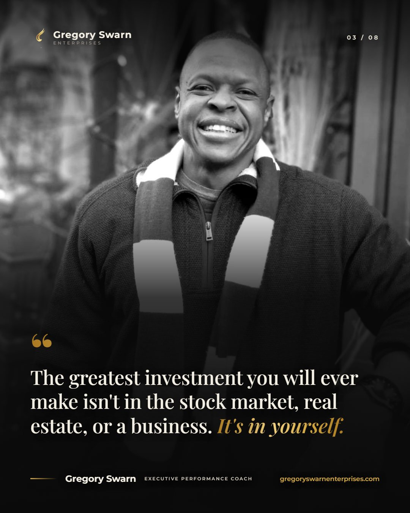
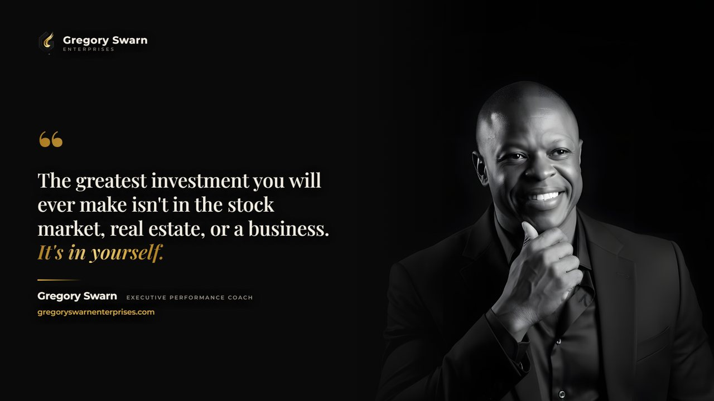
Your mind drives your vision, your body fuels your ambition, and your discipline determines how far you go.
The 3 Pillars of Peak Performance
Your mind drives your vision, your body fuels your ambition, and your discipline determines how far you go.
Miss one pillar and the whole house comes down.
Free Executive Performance Audit → link in bio
#executivecoaching #highperformance #mindbody #discipline #founders #ceolife #wellbeing
Your mind drives your vision, your body fuels your ambition, and your discipline determines how far you go.
Peak performance takes more than motivation. You can run and run on pure energy, but if your mental well-being is off, you never reach your full peak.
Think of it like a house built from stone and brick. If one pillar is missing, the whole thing comes down.
Your mind, your body and your discipline have to work together.
Which pillar needs the most attention for you right now?
#ExecutiveCoaching #Leadership #CEO
Free Executive Performance Audit → https://gregoryswarnenterprises.com/?utm_source=linkedin&utm_medium=social&utm_campaign=q2
Your mind drives your vision, your body fuels your ambition, and your discipline determines how far you go.
Miss one pillar and the whole house comes down.
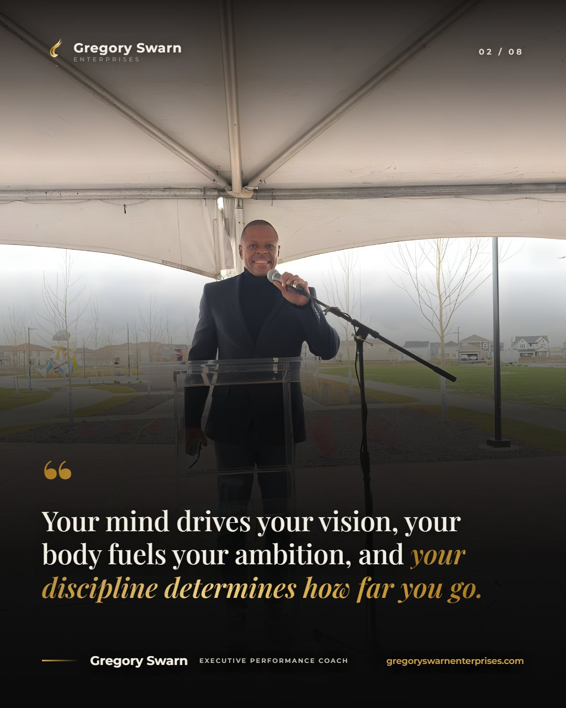
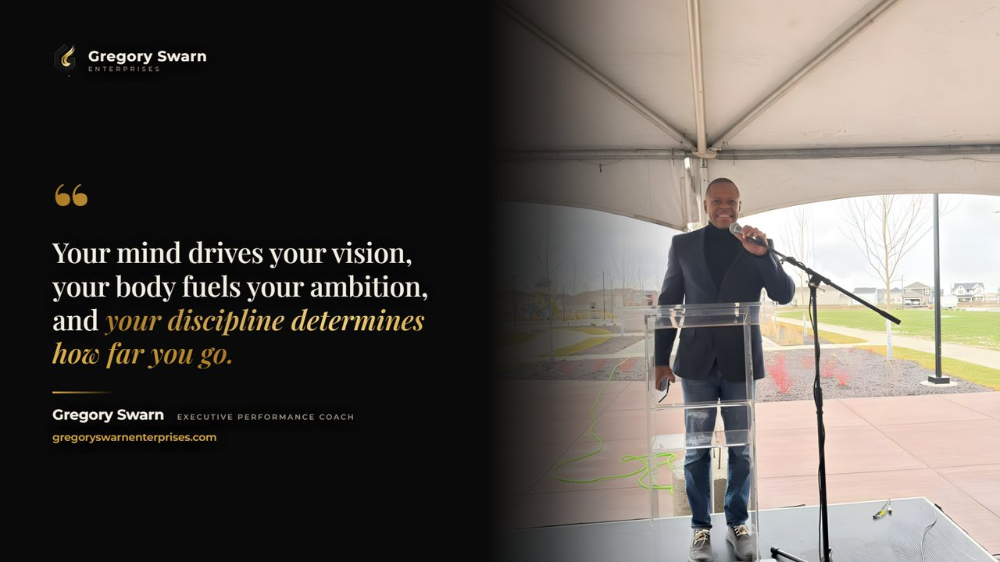
Protect your energy as carefully as you protect your financial investments. Both determine the quality of your future.
Protect Your Energy Like Your Money
Protect your energy like you protect your investments.
Watch who drains it, who restores it, and where your time goes.
Free Executive Performance Audit → link in bio
#protectyourenergy #executivecoaching #founders #ceolife #highperformance #timemanagement #wellbeing
Protect your energy as carefully as you protect your financial investments. Both determine the quality of your future.
Time is the one resource none of us controls. We don't know how much we have.
What we do control is who gets our energy, who and what restores it, and where our time goes each day.
Negative energy drains you, so guard yours the way you guard your money.
What's the biggest drain on your energy this month?
#ExecutiveCoaching #Leadership #CEO
Free Executive Performance Audit → https://gregoryswarnenterprises.com/?utm_source=linkedin&utm_medium=social&utm_campaign=q7
Protect your energy as carefully as you protect your financial investments. Both determine the quality of your future.
Who gets your energy this week?
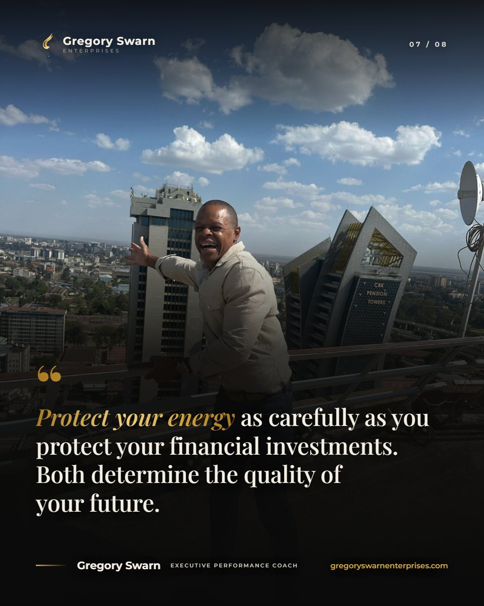
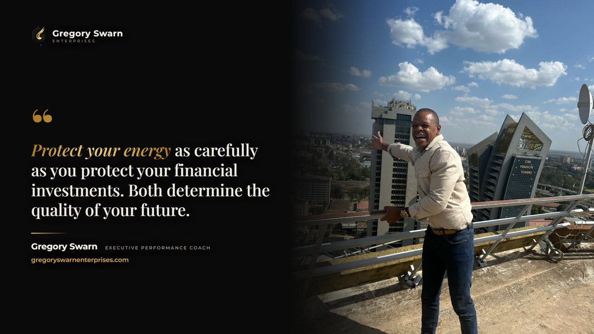
Your well-being is not something you should leave to chance. It's something you must take responsibility for every single day.
Why Your January Goals Die by February
Everybody can be good for a day.
Well-being comes from the habits you keep long after January.
Free Executive Performance Audit → link in bio
#accountability #consistency #executivecoaching #founders #ceolife #habits #discipline
Your well-being is not something you should leave to chance. It's something you must take responsibility for every single day.
Gyms make the most money in January. New resolutions, 6 AM alarms, a fresh start.
By Valentine's Day, most people are back to their old habits.
Anyone can be good for a day. Results come from the decisions and habits you repeat every day, and from holding yourself accountable.
Fail to plan, and you plan to fail.
What's one habit you've kept every single day this year?
#ExecutiveCoaching #Leadership #CEO
Free Executive Performance Audit → https://gregoryswarnenterprises.com/?utm_source=linkedin&utm_medium=social&utm_campaign=q5
Gyms make the most money in January. By Valentine's Day most people are back to old habits.
Your well-being is not something you should leave to chance. It's something you must take responsibility for every single day.
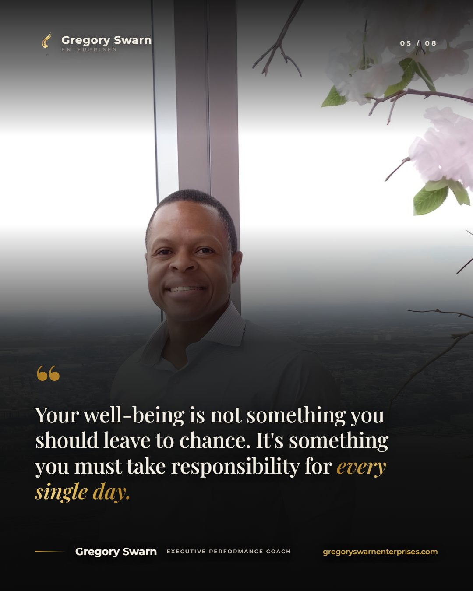
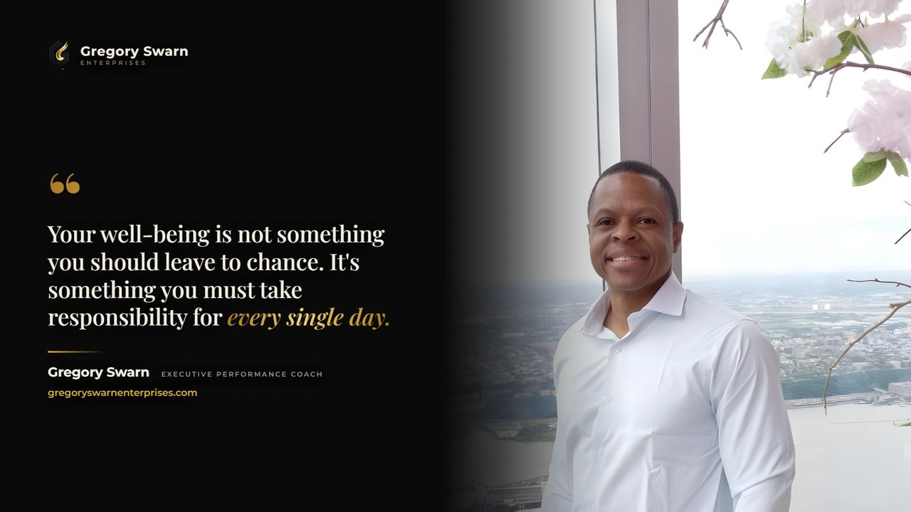
Rest isn't a sign of weakness or a lack of ambition. It's an essential part of performing at your highest level.
Why Rested CEOs Make Better Decisions
Rest is part of the job.
Your best decisions come from a rested brain.
Free Executive Performance Audit → link in bio
#restandrecovery #executivecoaching #burnout #founders #ceolife #sleep #highperformance
Rest isn't a sign of weakness or a lack of ambition. It's an essential part of performing at your highest level.
When you're fully rested, your brain and body work at their best, and you make better, more competent decisions.
High achievers often confuse being busy with being productive. Recovery is part of the process, not an interruption to it.
Short breaks during the day or a good night's sleep. Protect both.
With Thanksgiving tomorrow, what does rest look like for you this week?
#ExecutiveCoaching #Leadership #CEO
Free Executive Performance Audit → https://gregoryswarnenterprises.com/?utm_source=linkedin&utm_medium=social&utm_campaign=q4
Rest isn't a sign of weakness or a lack of ambition. It's an essential part of performing at your highest level.
Rested leaders make better decisions.
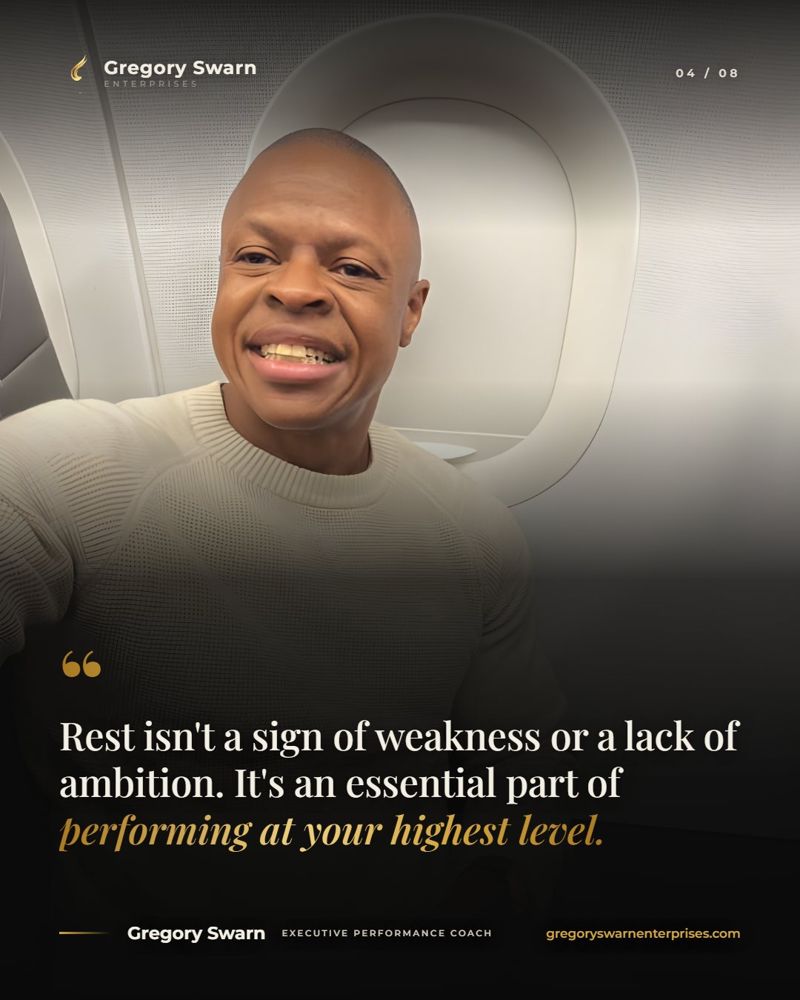
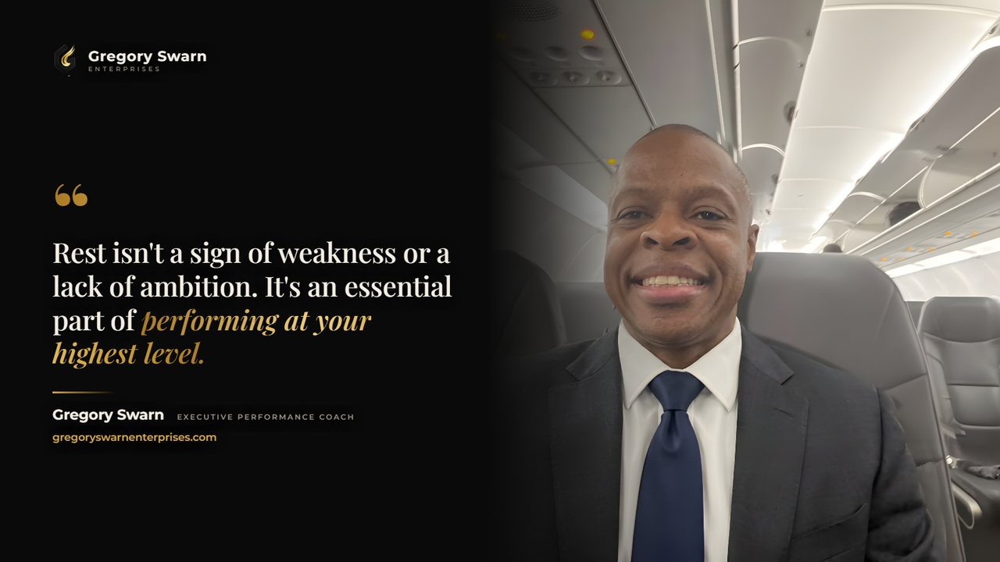
You shouldn't have to choose between building a successful career and living a fulfilling life. True success makes room for both.
Why So Many Millionaires Are Miserable
You shouldn't have to choose between building a successful career and living a fulfilling life. True success makes room for both.
Free Executive Performance Audit → link in bio
#worklifebalance #executivecoaching #founders #ceolife #success #family #fulfillment
"You can't have a real family life and be truly successful."
Stop right there.
You shouldn't have to choose between building a successful career and living a fulfilling life. True success makes room for both.
The happiest leaders Greg knows have both: financial success, and a full life with family, kids, and interests outside of work.
Have only one, and something else is missing. There are a lot of miserable millionaires out there.
Professional achievement and personal fulfillment should complement each other, not compete.
#ExecutiveCoaching #Leadership #CEO
Free Executive Performance Audit → https://gregoryswarnenterprises.com/?utm_source=linkedin&utm_medium=social&utm_campaign=q6
You shouldn't have to choose between building a successful career and living a fulfilling life. True success makes room for both.
I've seen a lot of miserable millionaires.
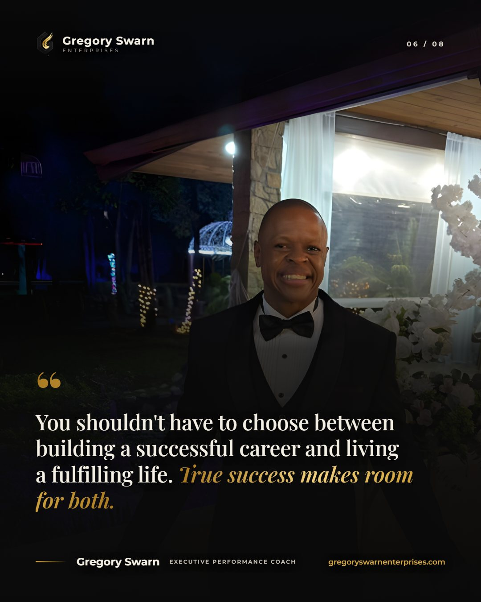
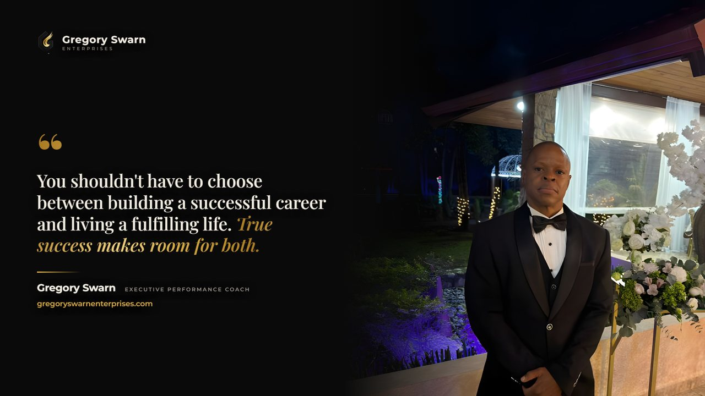
The objective isn't simply to achieve more today. It's to build the strength, clarity, and resilience to keep achieving tomorrow.
Slow and Steady Still Wins in Business
A shooting star burns out fast.
The person who keeps putting one foot forward every day is still going years later.
Free Executive Performance Audit → link in bio
#longevity #consistency #executivecoaching #founders #ceolife #slowandsteady #success
The objective isn't simply to achieve more today. It's to build the strength, clarity, and resilience to keep achieving tomorrow.
Business moves fast. That doesn't mean everything has to happen at once.
The hare starts fast and runs out of breath. The tortoise wins because he keeps putting one foot forward, every day.
A shooting star burns bright, then fizzles. Sustainable success is built step by step, over decades, not one season.
Over the past 4 weeks we've shared 8 principles of executive performance. Which one stayed with you?
#ExecutiveCoaching #Leadership #CEO
Free Executive Performance Audit → https://gregoryswarnenterprises.com/?utm_source=linkedin&utm_medium=social&utm_campaign=q8
The objective isn't simply to achieve more today. It's to build the strength, clarity, and resilience to keep achieving tomorrow.
The tortoise still wins.
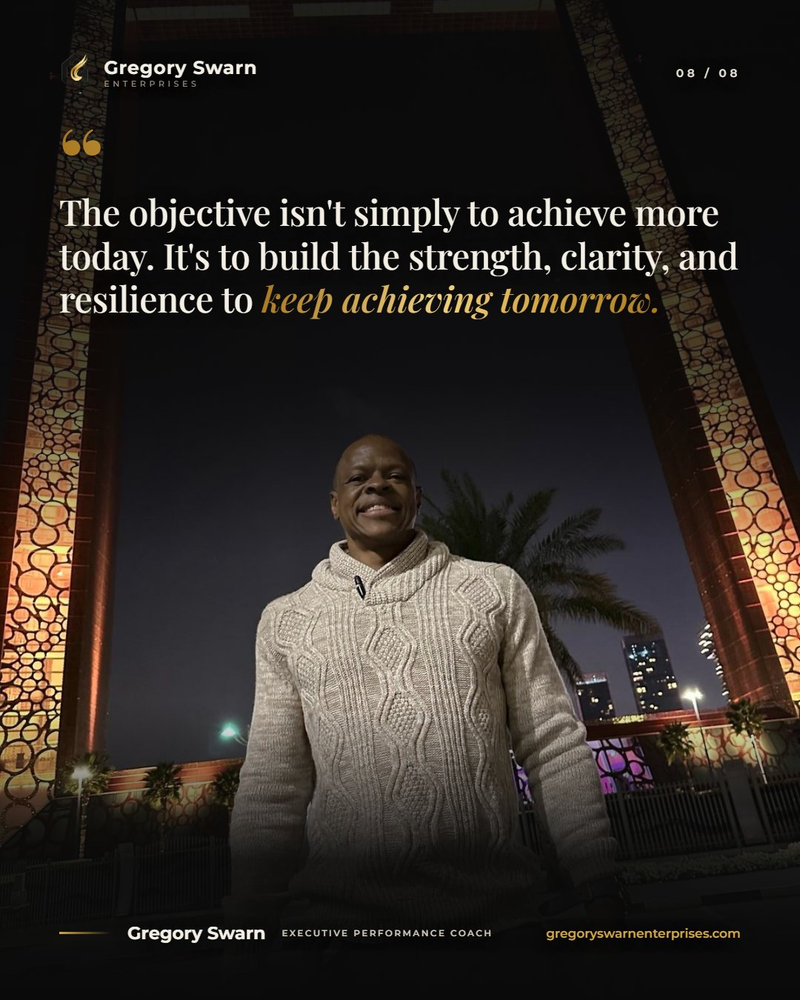
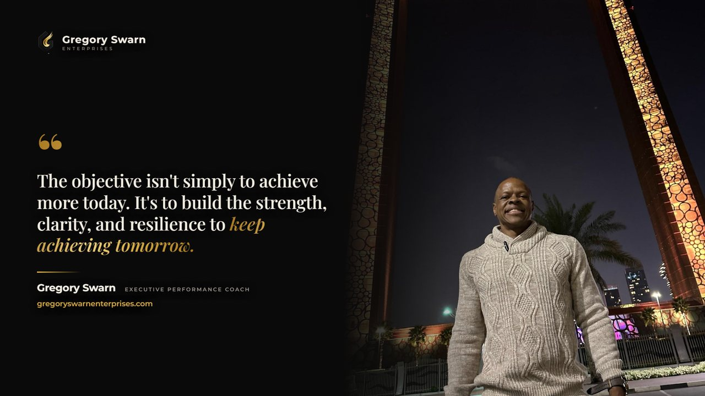
| Profiles | LinkedIn, YouTube, Instagram, X setup | Waiting |
| Tue 10 Nov | Q1 · Success & Well-Being | Waiting |
| Wed 11 Nov | Carousel · Where executives quietly plateau | Waiting |
| Thu 12 Nov | Q3 · Investing in Yourself | Waiting |
| Tue 17 Nov | Q2 · Mind, Body & Performance | Waiting |
| Thu 19 Nov | Q7 · Energy | Waiting |
| Tue 24 Nov | Q5 · Personal Accountability | Waiting |
| Wed 25 Nov | Q4 · Rest & Recovery | Waiting |
| Tue 1 Dec | Q6 · Balance | Waiting |
| Thu 3 Dec | Q8 · Longevity | Waiting |
Updated each time an item is approved or changed.